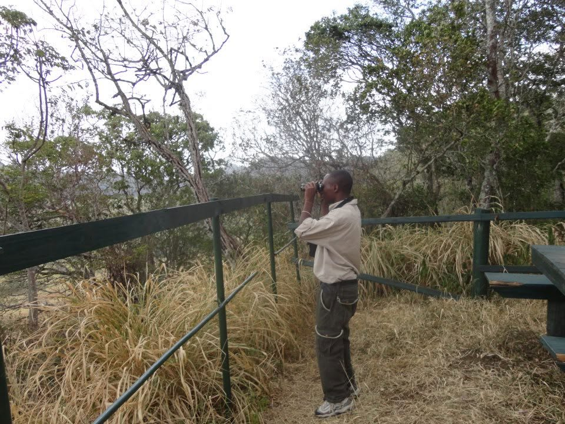

Southern Tanzania Focus
Our main specialty is Southern Tanzania, with experiences designed around its wildlife, landscapes and natural character.
Our Story
Birds & Environment Safaris was created to connect travelers with Tanzania's wildlife, birds, landscapes and communities through meaningful and carefully planned journeys.
Our main focus is Southern Tanzania, a region known for its spectacular landscapes, diverse wildlife, rich birdlife and opportunities for experiences that feel personal and away from the ordinary.
We design private, small-group and tailor-made experiences for travelers who want more than simply ticking destinations off a list.
Plan Your SafariExplore Tanzania's remarkable wildlife and natural landscapes.
Discover Tanzania's extraordinary birdlife at a comfortable pace.
Travel with respect for wildlife, nature and local communities.
Founder & Story
The person behind Birds & Environment Safaris.

Gregory Njau
Gregory Njau is a Tanzanian tourism professional with experience across guiding, hospitality, tourism operations, customer service and travel-related work.
His interest in wildlife, birds, nature and travel led to the development of Birds & Environment Safaris — a safari company focused on creating authentic experiences while highlighting the natural and cultural richness of Tanzania.
Gregory's tourism background includes professional tour guiding experience and working with travelers from different backgrounds. This experience has shaped an approach centered on good communication, personal service and understanding what each traveler wants from a journey.
His particular interest is Southern Tanzania, including destinations such as Ruaha National Park, Nyerere National Park, Mikumi National Park and the Udzungwa Mountains.
Through Birds & Environment Safaris, the goal is to help visitors discover Tanzania in a way that is memorable, respectful and connected to nature.
Why Travel With Us
We believe a great safari should feel personal, flexible and connected to the destination.
Our main specialty is Southern Tanzania, with experiences designed around its wildlife, landscapes and natural character.
From classic game drives to focused birdwatching, we help you build an experience around the wildlife and interests you care about.
We listen to your interests, travel style and budget before shaping an itinerary that works for you.
Where We Go
Discover some of the region's most rewarding wildlife and nature destinations.
Vast Ruaha landscapes with exceptional wildlife viewing, dramatic baobabs and strong birdlife.
Nyerere National Park Wild dogs • Rufiji River • boat safarisA huge southern wilderness known for river journeys, wildlife and some of Tanzania's best wild-dog country.
Mikumi National Park Elephants • game drives • wildlifeAn accessible Southern Tanzania safari destination with open wildlife country and excellent game drives.
Udzungwa Mountains Forest • walking • waterfalls • birdsLush mountain forest, walking experiences, waterfalls and distinctive endemic wildlife.
Our Approach
Wildlife tourism can create meaningful connections between visitors, nature and local communities. We believe those connections should be handled with care.
Experience Tanzania's wildlife, birds and landscapes.
Treat wildlife, communities and nature with care.
Encourage responsible tourism and appreciation of the environment.
Start planning
Tell us what you would like to experience and we'll help shape your safari.